Signal Foundation
Positioning, story, bio, links, and a focused EPK or one-sheet for booking readiness.

SENTIENT productionsSentient Productions builds intentional identity, digital presence, narrative strategy, and long-term career systems for electronic artists.
We do not make noise louder. We clarify signal.
Most artists do not need more random content. They need a stronger system.
Identity. Digital presence. Narrative. Booking assets. Websites. EPKs. Content strategy. Long-term career architecture.
We build the system so every release, every performance, every collaboration, and every interaction reinforces the same signal.
Positioning, story, bio, links, and a focused EPK or one-sheet for booking readiness.
Website, visual language, content direction, EPK, mailing list, and artist toolkit.
Monthly updates, content planning, newsletter support, web maintenance, and quarterly review.
Selective long-term partnership for artists ready to build cultural gravity beyond the club.
CURRENT TRANSMISSION
Sentient partnered with Augustus Williams to build a complete artist system, including brand identity, website, EPK, visual direction, narrative strategy, and long-term digital infrastructure. The goal was not simply to promote music. It was to create a coherent platform capable of supporting an enduring career.
Frameworks is where Sentient publishes the thinking behind the work. These essays, case studies, and practical models explore artist positioning, booking readiness, identity systems, digital presence, release strategy, and long-term career development.
For artist strategy, EPKs, websites, festival support, or creative direction:
jody@sentientproductions.com